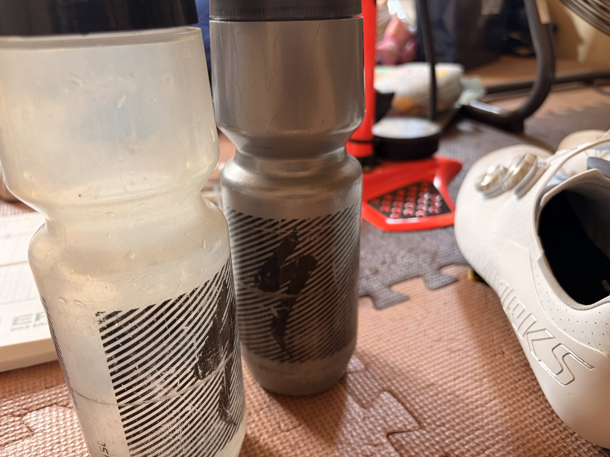

室温33℃・湿度70％のSST。1本目245W、2本目は踏めなかった
今日は4本ローラーでSST25分×2を狙った。前回は243Wで20分×2を完遂しているので、出力は上げずに1本あたり5分ずつ延ばす予定だった。
1本目は25分・245Wで完遂。しかし2本目は全く踏めず、201Wまで落として21分続けた。室温32.8℃、湿度70％。脚より先に、身体へたまった熱が限界に来たように感じる。

1本目は25分・245Wで前進
1本目は25分01秒、平均245W、平均心拍147bpm、最大157bpm、平均ケイデンス90rpm。予定していた242〜243Wより少し高くなったが、25分は最後まで維持できた。FTP設定275Wに対して約89％、75kg基準では約3.27W/kgになる。
前回は243Wで20分だった。今回は暑さがさらに厳しい中で245Wを25分。1本目だけを見れば、持続時間は確実に伸びている。
2本目は脚より熱が先に来た
レストは6分。その後に2本目へ入ったが、いつもの出力まで上げられなかった。結果は21分01秒、平均201W、平均心拍144bpm、平均ケイデンス80rpm。出力は1本目から44W落ちているのに、平均心拍は147bpmから144bpmへ下がっただけだった。
単純に脚が終わったというより、1本目で蓄積した熱の影響が大きかったのだと思う。湿度70％では汗が乾きにくく、レストを取っても身体が冷えない。2本目はSSTではなくなったが、フォームは維持できていたので完全にはやめず、テンポ以下の出力で21分続けた。

ボトル2本でも身体は冷えない
Garminの推定発汗量は1123ml。体感ではそれ以上に汗をかいたように感じた。冷たい水を用意しても、部屋そのものが暑く湿度も高いため、身体全体を冷やすところまではいかない。
この部屋はクーラーが効きにくく、室温を大きく下げる対策は難しい。現実的にできるのは開始時間を早めることと、その日の室温や湿度に合わせてメニューを変えることになる。
25分×2未達でも、今日は弱くない
予定どおりのSST25分×2にはならなかった。それでも245Wを25分、その後に201Wを21分。合計46分は一定したフォームで回している。全体はNP213W、IF0.773、TSS68.3、有酸素TE3.5だった。
今日の内容を言い換えるなら「SST25分＋高温環境での持続走21分」。狙ったメニューとは違うが、ONの日として必要な負荷は入っている。単純な失敗として終わらせるより、次の設定を決める材料にした方がいい。
今後は室温で2パターンを使い分ける
早い時間に始められ、室温が少し低い日は242〜243Wで25分、レスト5分、もう一度242〜243Wで25分。本来のSST25分×2を狙う。
室温33℃前後で湿度も高い日は、1本目を242〜243Wで25分、2本目を220〜230Wで25分にする。途中で急に踏めなくなるまで粘るより、最初から現実的な出力を決め、一定ペースで最後まで回した方が室内練習の目的に合っている。
暑さへ慣れることと、毎回完遂することは別
暑い環境で練習を続ければ、身体も少しずつ慣れていくと思う。ただし暑さへ慣れることと、毎回同じメニューを無理に完遂することは別だ。
外では高い出力を出す。室内では一定ペースを長く続ける。さらに暑い日は、その条件で最後まで続けられる出力を選ぶ。固定メニューへ身体を無理やり合わせるのではなく、意味のある負荷を残す方向へ調整していく。
今回やってみて思ったこと
1本目は踏めた。2本目は踏めなかった。それでも完全にやめず、フォームを維持して21分続けた。同じ部屋でも室温、湿度、開始時間、前日の負荷、身体の熱の抜け方で結果は変わる。
今日の245W・25分は前進。201W・21分も、次のやり方を決める材料になった。次回は開始時間と室温を見て、SST25分×2にするか、SST＋テンポにするかを最初から選ぶ。
自分用メモ
- 予定SST25分×2 / 242〜243W / レスト5〜6分
- 結果1本目25分・245W / 2本目21分・201W
- 全体1時間9分 / 34.83km / 平均195W / NP213W
- 負荷IF0.773 / TSS68.3 / 有酸素TE3.5
- 暑さ室温32.8℃・湿度70％ / Garmin平均33.3℃・最高34℃
- 次回涼しければSST25分×2 / 暑ければSST25分＋テンポ25分